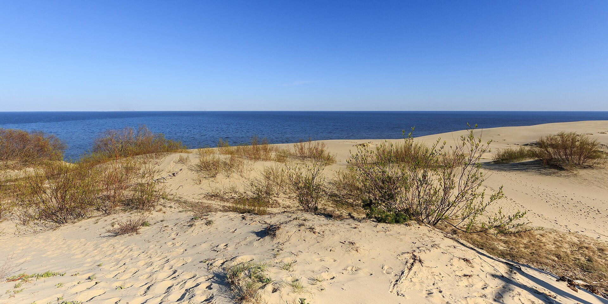
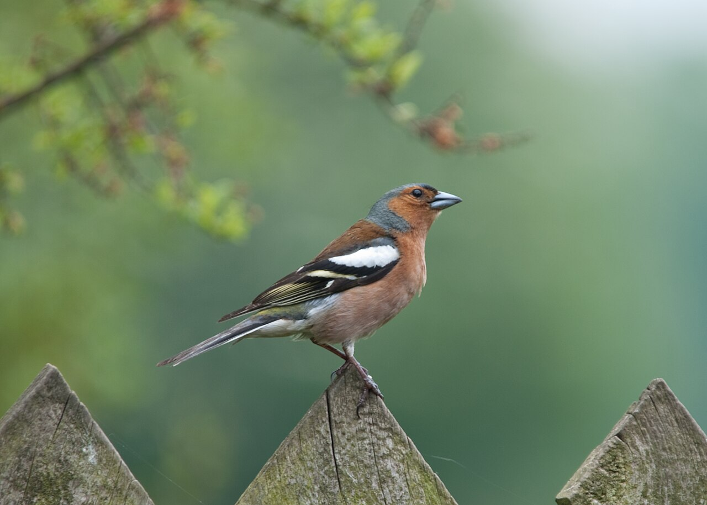
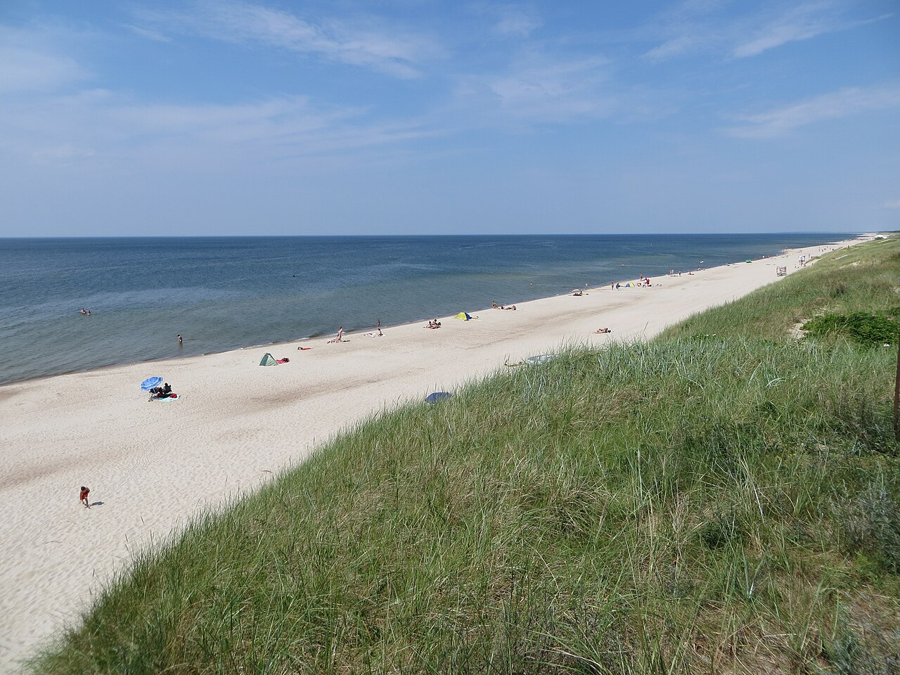

01
Высота Эфа
Самая высокая подвижная дюна Европы — 62 метра. Названа в честь дюнного инспектора Франца Эфа, укротителя песков. С деревянных настилов видно и море, и залив.
Дюна Ореховая
Национальный парк · Калининградская область
Узкая полоса песка между Балтийским морем и тихим заливом. Кочующие дюны, сосновые боры и миллионы птиц над головой.
Что это за место
Куршская коса — тонкий полуостров длиной около 98 километров, отделяющий пресный Куршский залив от солёной Балтики. Ширина местами всего 400 метров, а рядом высятся дюны с многоэтажный дом.
Здесь ветер веками лепит из песка кочующие дюны, а сосновые леса удерживают их на месте. С 2000 года этот ландшафт входит в список Всемирного наследия ЮНЕСКО, а российская часть с 1987 года бережётся как национальный парк.
Полдня пути — и вы проходите пляжи открытого моря, вершины подвижных дюн, реликтовый лес и тихие рыбацкие посёлки.
 Посёлок Лесной с высоты птичьего полёта
Посёлок Лесной с высоты птичьего полёта

«Здесь песок дышит, а лес запоминает форму ветра.»
Знаковые места
От самой высокой дюны Европы до леса, застывшего в танце.
Самая высокая подвижная дюна Европы — 62 метра. Названа в честь дюнного инспектора Франца Эфа, укротителя песков. С деревянных настилов видно и море, и залив.
Дюна Ореховая
Сосны с загадочно закрученными в кольца и спирали стволами, будто застывшие в танце. Одно из самых таинственных мест косы.
Загадка природы
Старейшая в мире орнитологическая станция, основана в 1901 году. Коса — сухопутный мост, которым в миграцию пользуются до 10 миллионов птиц.
Кольцевание птиц
Реликтовый хвойный лес с вековыми деревьями, туями и елями. Экотропа ведёт сквозь строй исполинов, помнящих прусских королей.
Экотропа
Тихая пресная лагуна с тростником, песчаными отмелями и рыбацкими лодками. Лучшее место, чтобы встретить закат над водой.
Закаты и тишинаОзеро Чайка, музей природы, маяк, орлан над заливом и бесконечные пляжи открытой Балтики.
Спланировать маршрутГалерея




Дорога сюда
Коса начинается сразу за Зеленоградском и тянется на север до литовской границы.
Из Калининграда 40–50 минут на автомобиле, электричке или автобусе.
КПП на въезде на косу, оплата экологического сбора нацпарка.
Рейсовый автобус №593 «Калининград — Морское» или собственный транспорт.
Оборудованные пешие маршруты к дюнам и лесу, веломаршрут вдоль всей косы.
Парк открыт круглый год. Самое мягкое солнце и тёплые краски — с мая по сентябрь; золотая осень окрашивает боры в медь.
Схема условная — расстояния не в масштабе.

Золотой час
Когда солнце садится в Балтику, песок становится золотым, а залив — зеркалом. Спланируйте поездку и увидьте это своими глазами.
Спланировать поездку →